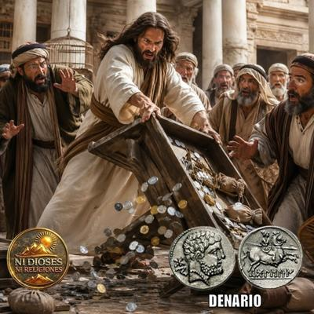

La provincia romana de Judea del siglo I, zona geográfica donde habría vivido Jesús, era un territorio intensamente mercantilizado y con un intercambio comercial muy activo, tanto a nivel local (interno) como a escala interregional e internacional (externo). Su ubicación geográfica estratégica la convertía en un puente natural obligatorio entre Egipto, Siria, Fenicia y las rutas que conectaban con las regiones del Lejano Oriente. Y el comercio floreció de manera notable, gracias a la estabilidad vial de la Pax Romana y a la unificación monetaria del imperio.


Una unificación monetaria que no debe entenderse como que existía una moneda única, sino como una unificación de los pesos, equivalencias y el control imperial. En la Judea del siglo I, coexistían en realidad tres sistemas monetarios: el romano, el griego (helenístico) y el local judío. Y esto obligaba a que los cambistas del Templo de Jerusalén fueran indispensables para el comercio. Pero también indispensables para el pago de impuestos, que se entregaban tanto al César (el emperador romano) como a los representantes de Yahvé. Además de que también, por supuesto, se requería de un intercambio monetario para la importación de productos. Incluso los relatos evangélicos muestran que había artículos de lujo importados desde miles de kilómetros de distancia.
La palabra «dinero» que utilizamos con tanta naturalidad, proviene de allí, del latín «denarĭus», término empleado por los antiguos romanos para referirse a una moneda de plata de uso común en el Imperio, de unos 3,85 gramos de peso. A su vez, de la palabra «denarĭus» deriva «denario». Y la raíz de estas palabras es «deni», que significa «cada diez», porque el «denarĭus» o denario, era una moneda que equivalía a diez «ases», otra unidad monetaria. (El mismo origen tiene la palabra «dinar», nombre de la moneda usada en algunos países árabes). La circulación masiva del denario en Judea, se consolidó después de que Roma conquistara la región, y especialmente tras convertirla en provincia del Imperio en el año 6 de nuestra era.
Resulta que el denario llevaba la imagen del César, y era la moneda de la «capitación» o impuesto que los romanos exigían a los pueblos que gobernaban, entre ellos, los judíos. Es la moneda a que se refiere aquel episodio de los evangelios, en que unos espías del Sanedrín que se hacían pasar por seguidores de Jesús, dirigiéndose a él como «Maestro (Rabbí)», le hacen aquella pregunta capciosa sobre si era correcto pagar impuestos al emperador romano, y cuando Jesús les pidió que le mostraran una moneda de las usadas para pagar ese impuesto, ellos le enseñaron precisamente un denario. Entonces Jesús les preguntó de quién era la imagen que en ella aparecía, respondiendo ellos que era del César (en ese tiempo Tiberio Julio César, más conocido como Tiberio). Y entonces Jesús les responde con aquella famosa frase: «Dad a César lo que es de César, y a Dios lo que es de Dios» (Mateo 22:15-22, Marcos 12:13-17, Lucas 20:19-26).
Por otra parte, según la parábola de la Viña y los Obreros (Mateo 20:1-16), un jornalero agrícola recibía normalmente un denario por una jornada de trabajo de unas doce horas. Y la Biblia da también una idea del poder adquisitivo del denario: «Un denario por un litro de trigo, y un denario por tres litros de cebada.» (Apocalipsis 6:6).
Ahora, resulta interesante que los judíos tenían la obligación de pagar tributo no sólo al César, sino también a sus autoridades religiosas: el impuesto anual del Templo de Yahvé, el cual no se podía pagar con denarios, debido a que tenían la figura del odiado César, algo que justificaban argumentando que su religión prohibía los retratos de personas (Deuteronomio 27:15). Y allí entraban en juego los cambistas que Jesús azotó y cuyas mesas volcó, pero que estaban debidamente autorizados por las autoridades religiosas para prestar ese servicio (Marcos 11:15, Mateo 21:12, Juan 2:15). Por eso el pago de aquel impuesto debía hacerse en otras monedas de plata denominadas «siclos» (shekel en hebreo). Siclo era originalmente una unidad de peso usada por los pueblos semitas desde muchos siglos antes de Roma.
La cuota obligatoria para todo judío era de medio siclo al año por persona, aunque estaban exentas las mujeres, los esclavos, los hombres menores de veinte años, y por supuesto los sacerdotes (Éxodo 30:13-14). Sin embargo, en tiempos de Jesús las monedas preferidas para el impuesto del Templo eran los siclos acuñados por los fenicios en la ciudad de Tiro, aproximadamente desde el siglo II AEC. ¿Por qué? —Porque tenían un contenido de plata extremadamente puro y estable, y el templo exigía calidad metálica confiable. Lo contradictorio es que rechazaban los denarios romanos porque llevaban la imagen del César, pero aceptaban monedas fenicias, que también tenían imágenes paganas. Porque obviamente no era tanto la «pureza espiritual», sino la conveniencia económica.
Un siclo equivalía aproximadamente a 4 denarios, por lo que medio siclo, el impuesto anual del templo, equivalía aproximadamente a 2 denarios. Y esto equivalía aproximadamente a dos días de salario de un trabajador. (Modernamente, el diezmo equivale a 36 días y medio de salario al año).
Pero tenemos otro episodio muy revelador, que se relaciona con el dinero y los lujos de la época: el de una «mujer pecadora» (se entiende una prostituta), que echa a Jesús un perfume de nardo puro contenido en un frasco de alabastro (Juan 12:3). Según unos evangelios en la cabeza (Marcos 14:3-9, Mateo 26:6-13), pero según otros en los pies (Lucas 7:36-50, Juan 11: 2, Juan 12:3, Lucas 7:37-39). En lo que sí hay coincidencia es que se trataba de una fragancia muy costosa. El nardo es una planta de la familia de la valeriana (Nardostachys jatamansi), que crecía principalmente en regiones del Himalaya, especialmente en Nepal y el norte de la India. Y su perfume era de extracción difícil y laboriosa, por lo que era embazado en frascos sellados de alabastro (una variedad de piedra de yeso de difícil obtención), para conservar el olor, e importarlo y transportarlo mediante largas rutas comerciales orientales.
Aquello fue criticado por el fariseo anfitrión de la reunión (Lucas 7:37-39, Juan 11:2, Juan 12:3), y por algunos de los presentes (los discípulos según Mateo, o por Judas según Juan), al considerar que se trataba de un derroche injustificado, ya que, según ellos, el perfume que aquella mujer derrochó en Jesús, pudo haberse vendido para entregar el dinero a los pobres (Mateo 26: 8-9, Marcos 14: 4-5, Juan 12: 4-5). Según su cálculo, de la venta pudieron haberse obtenido más de trescientos denarios, lo que equivalía aproximadamente a trescientas jornadas de trabajo, casi un año de salario de un trabajador común. Algo equivalente a más de 600 libras de trigo y 1800 libras de cebada. ¡Qué lujoso!
Sin embargo, Jesús lo que hizo fue justificar lo ocurrido, algo que contrasta con su imagen de hombre humilde, como se calificaba a sí mismo, poniéndose de ejemplo: «Aprended de mí, que soy manso y humilde de corazón» (Mateo 11:29). Un hombre que supuestamente «no vino para ser servido, sino para servir» (Marcos 10:45, Mateo 20:28).
En fin, lo cierto es que el mundo de Jesús estaba lejos de ser una comunidad espiritual aislada del dinero (y de los lujos). Judea era una provincia bajo ocupación romana, atravesada por caravanas de comerciantes, impuestos imperiales, tributos religiosos, desigualdad económica y tensiones políticas permanentes. Y las monedas no eran simples piezas de metal: representaban poder, autoridad, sometimiento y religión. El denario llevaba la cara del emperador y el siclo de Tiro financiaba el Templo. Mientras los cambistas convertían fe en comisiones. Era un lugar donde un perfume importado desde el Himalaya podía valer casi un año entero de trabajo de un campesino, pero que Jesús se daba el lujo de que se lo echaran en los pies.
[Godless Freeman]
http://etimologias.dechile.net/?dinero
Comentarios
Comments powered by Disqus